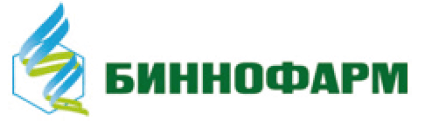
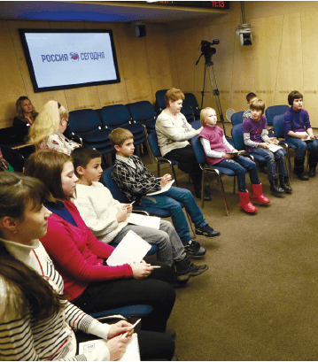
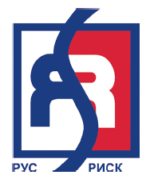

1.8. Взаимодействие с заинтересованными сторонами
Принципы взаимодействия с заинтересованными сторонами
Стабильные, взаимовыгодные и прозрачные отношения со всеми заинтересованными сторонами – непременное условие устойчивости бизнеса и эффективности реализации стратегии Корпорации.
АФК «Система» стремится учитывать мнение широкого круга заинтересованных сторон в рамках решения конкретных задач, связанных с экономическим, социальным и экологическим воздействием Корпорации. Для каждой целевой группы разработаны и внедрены свои методы информирования, обратной связи и взаимодействия
Список заинтересованных сторон
В 2015 году при подготовке Отчета об устойчивом развитии АФК «Система» за 2014 год был проведен опрос менеджмента с целью уточнения списка и ранжирования заинтересованных сторон по степени их влияния на деятельность Корпорации и воздействия деятельности Корпорации на них. По итогам опроса была составлена ранговая карта заинтересованных сторон, признанная актуальной и в 2016 году
Ранговая карта заинтересованных сторон
В число заинтересованных сторон Корпорации входят:
- 6. Акционеры
- 7. Менеджмент
- 8. Персонал
- 9. Дочерние и зависимые компании
- 10. Средства массовой информации
- 11. Органы государственной власти
- 12. Государственные органы контроля (надзора)
- 13. Органы местного самоуправления
- 14. Население регионов присутствия
- 15. Инвестиционное сообщество
- 16. Бизнес-партнеры
- 17. Заказчики/потребители
- 18. Профессиональные ассоциации
- 19. Научное сообщество
- 20. Образовательные учреждения
- 21. Общественные экологические организации
- 22. Некоммерческие социальные и благотворительные организации
Взаимодействие Корпорации с заинтересованными сторонами в 2015 году
Взаимодействие с органами государственной власти
Федеральные органы исполнительной властиВ отчетном году продолжилось устойчивое рабочее взаимодействие с Аппаратом Правительства Российской Федерации, федеральными министерствами и ведомствами по сопровождению инвестиционных и социальных проектов Корпорации.
Одним из важных результатов этой работы стало согласование с Министерством финансов Российской Федерации условий рассрочки до 2020 года обратного выкупа у государства акций совместного российско-индийского предприятия связи SSTL в рамках опциона. Согласованные условия рассрочки были учтены в федеральном бюджете на 2016 год и впоследствии закреплены в соглашении между Федеральным агентством по управлению государственным имуществом и АФК «Система», заключенном в июне 2016 года.
Кроме того, в 2015 году АФК «Система» оказывала содействие своим портфельным компаниям в получении доступа к программе государственной поддержки стратегически значимых предприятий, реализуемой в рамках выполнения антикризисного плана Правительства Российской Федерации. Для этого был проведен анализ антикризисных мер и разработаны предложения к государственным органам по «секторальным» (ведомственным и отраслевым) формам и методам поддержки. Преимущественное внимание было уделено ДЗК, работающим в сфере фармацевтики, лесопользования, растениеводства, высоких технологий.
В 2015 году вышло на новый уровень партнерство Корпорации с Министерством образования и науки Российской Федерации по реализации программы поиска и подготовки молодых технологических лидеров для наукоемких компаний и перспективных отраслей отечественной промышленности. Ведомство предоставило квоты для участников инженерно-конструкторских школ «Лифт в будущее» на базе федеральных детских центров.
Органы законодательной власти
В отчетный период АФК «Система» продолжала активную экспертную работу в рамках профильных комитетов и комиссий Государственной Думы и Совета Федерации Федерального собрания Российской Федерации, в частности, в сфере развития мобильной коммерции. Государственная Дума 10 ноября 2015 года приняла законопроект «О внесении изменений в статью 54 ФЗ «О связи» и статью 15 ФЗ «О национальной платежной системе», который совершенствует порядок осуществления платежей с использованием мобильного телефона и снимает существенные ограничения на пути развития мобильной коммерции в России.
АФК «Система» также способствовала внесению в Государственную Думу законопроекта по комплексному внедрению принципов совместного использования ресурсов оборудования системы радиодоступа несколькими операторами связи (Network Sharing). По предварительным оценкам, за счет строительства общих базовых станций на сетях LTE может быть достигнута значительная экономия капитальных и операционных затрат операторов связи, что будет способствовать повышению качества и доступности современных телекоммуникационных услуг.
Международное сотрудничество
В период с 26 по 28 мая 2015 года в Джидде (Саудовская Аравия) под эгидой Торгово-промышленной палаты Российской Федерации прошло роуд -шоу российских регионов и компаний, в котором приняли участие возглавлявший российскую делегацию Председатель Совета директоров Владимир Евтушенков, Президент АФК «Система» Михаил Шамолин и другие представители топ-менеджмента Корпорации, Чрезвычайный и Полномочный Посол Российской Федерации в Королевстве Саудовская Аравия Олег Озеров, заместитель Министра иностранных дел Российской Федерации Михаил Богданов, а также более 100 представителей российских деловых кругов, официальных структур и региональных правительств. Мероприятие позволило изучить возможности, развития отношений с саудовскими партнерами в таких секторах, как сельское хозяйство и нефтегазовый сектор.
17 июня в рамках визита в Россию заместителя наследного принца Королевства Саудовской Аравии Мохаммеда бин Сальмана Аль Сауда в Санкт-Петербурге состоялся Российско-Саудовский бизнес-форум, участниками которого стали около 60 представителей саудовских компаний и государственных структур, а также более 100 российских предпринимателей и представителей властей. На открытии форума выступил Председатель Российско-Арабского и Российско-Саудовского деловых советов Владимир Евтушенков; в круглых столах по инфраструктурному развитию, транспорту и электроэнергетическим ресурсам, нефтегазовому сектору, сельскому хозяйству, медицине и здравоохранению приняли участие топ-менеджеры АФК «Система», компаний «Таргин», «Медси» и «Биннофарм».
В ноябре 2015 года по итогам состоявшихся в Москве заседаний Российско-Саудовского Делового Совета и Совместной межправительственной Российско-Саудовской комиссии по торгово-экономическому и научно-техническому сотрудничеству АФК «Система» и саудовская компания «Вафрат Ат-Тавасуль» (Wafrat Al Tawasul) объявили о намерении создать российско-саудовскую инвестиционную компанию для капиталовложений в агропромышленный сектор, строительство инфраструктуры, транспорт и другие отрасли. Также был подписан Меморандум о взаимопонимании между АО «Таргин» и «Вафрат Ат-Тавасуль» о создании на территории Королевства Саудовская Аравия совместного предприятия по изготовлению буровых долот.

«Торгово-экономические отношения между Россией и Саудовской Аравией последовательно развиваются, хотя по-прежнему имеют большой неиспользованный потенциал. Недели бизнеса, сначала российского в Эр-Рияде, а затем саудовского в Москве, – это значимые события с точки зрения расширения взаимовыгодного сотрудничества. Ознакомительные встречи, визиты делегаций «на места» очень важны для налаживания информационного обмена и установления атмосферы доверия и открытости между предпринимателями двух стран».
Владимир Евтушенков
Председатель Совета директоров АФК «Система», председатель российской части Российско-Арабского Делового Совета
Традиционно важным направлением в развитии международных связей для АФК «Система» являются отношении с Индией. Представители АФК «Система» приняли участие в заседании комитетов Межправительственной Российско-Индийской комиссии, которые прошли 20 октября 2015 года в Москве. В ходе мероприятия обсуждались вопросы развития торгово-экономического и промышленного сотрудничества двух стран.
Важнейшим результатом развития многолетних отношений между АФК «Система» и китайскими банками стало успешное закрытие в декабре 2015 года долгосрочной клубной сделки с China Development Bank и Bank of China с общим лимитом кредитования в размере 350 млн долл. США сроком на 6 лет без обеспечения.

«В новых текущих экономических условиях для российских заемщиков Китай выходит на первый план как международный источник фондирования. Однако главное условие работы с китайскими кредиторами – это время. Они долго присматриваются к заемщикам и стремятся выстраивать долгосрочные отношения. Сделка, которую удалось заключить АФК «Система», – результат именно таких многолетних отношений, история которых складывалась на протяжении десяти лет».
Всеволод Розанов
Старший вице-президент – руководитель Комплекса финансов и инвестиций АФК «Система»
Взаимодействие с региональной и местной властью
С целью поиска и расширения инвестиционных возможностей в регионах в течение 2015 года был проведен ряд рабочих встреч на уровне руководства субъектов Российской Федерации для обсуждения возможностей сотрудничества по приоритетным для Корпорации направлениям. Особое внимание было уделено сектору лесной и деревообрабатывающей промышленности.
Результатом этой работы стало подписание генеральных соглашений о сотрудничестве с Архангельской, Кировской, Иркутской и Вологодской областями. Соглашения направлены на формирование благоприятной экономической, инвестиционной и социальной обстановки в ключевых для Корпорации регионах. Предполагается модернизировать и повысить эффективность предприятий и расширить присутствие на местных рынках. Так, например, в рамках реализации соглашения руководством Вологодской области созданы максимально инвестиционно привлекательные условия для развития существующего бизнеса Segezha Group и обеспечено вхождение в регион практически всех заинтересованных в работе с областью дочерних компаний: ГК «Медси», ГК «Детский Мир», ПАО «МТС-Банк», АО «Ситроникс КАСУ», АО «Биннофарм», Группы OZON. (Подробнее см. раздел 2.2.1. Социально-экономическое партнерство.)
В 2015 году было продолжено взаимодействие с Правительством Республики Дагестан по внедрению комплексной системы обеспечения безопасности Республики путем реализации проектов «Безопасный регион», «Система 112» и других.
В рамках реализации социальной политики Корпорации в мае 2015 года было подписано трехстороннее соглашение между Правительством Москвы, Московским городским советом ветеранов войны, труда, Вооруженных Сил и правоохранительных органов и АФК «Система», которое положило начало широкому социальному партнерству в сфере поддержки ветеранов и патриотического воспитания молодежи. Совместно с Департаментом труда и социальной защиты населения Москвы, Московским городским советом ветеранов и ГК «Медси» в отчетном периоде Корпорация запустила масштабную программу «Забота о ветеранах», в рамках которой доступ к бесплатным медицинским услугам получили более 500 участников войны. (Подробнее см. раздел 2.2.2. Повышение качества жизни населения.)
В 2015 году активную поддержку по внедрению в инженерно-конструкторские школы программы «Лифт в будущее» в регионах России оказали Краснодарский край, Московская область и Республика Крым. Представители администраций и правительств субъектов Российской Федерации приняли участие в официальных церемониях открытия и закрытия школ.
16 июля 2015 года Председатель Правительства Республики Калмыкия Игорь Зотов при участии Министра экономики и торговли Эрдени Болдырева провел рабочую встречу с представителями Департамента по безопасности и информационным технологиям АФК «Система», на которой обсуждались возможности сотрудничества Республики и Корпорации в создании инфраструктуры «Безопасного города» и ситуационного центра на территории региона.
Взаимодействие с акционерами
Осенью 2015 года число акционеров АФК «Система» пополнилось крупными институциональными фондами. На сегодняшний день в топ-10 крупнейших акционеров Корпорации входят сингапурский фонд GIC (1-е место), фонды Группы BlackRock, Skagen, Norges, Pictet. Это стало возможным благодаря практике регулярных встреч с инвесторами и повышению прозрачности непубличных активов Корпорации.
(Подробнее о взаимодействии с акционерами см. Годовой отчет АФК «Система» за 2015 год, с. 81-83.)
Взаимодействие с инвестиционным и деловым сообществами
Успех бизнеса АФК «Система» во многом определяется устойчивыми долгосрочными отношениями с инвестиционными и отраслевыми партнерами. В 2015 году топ-менеджмент Корпорации провел несколько десятков рабочих встреч с инвестиционными фондами, крупнейшими междугорными компаниями и финансовыми аналитиками в России и за рубежом, в том числе в рамках роуд-шоу по презентации новой стратегии и на площадках крупнейших деловых форумов:
- 21–24 января – 45-й Всемирный экономический форум в Давосе (Швейцария)),
- 18–20 июня – XIX Петербургский международный экономический форум,
- 3–5 сентября – Восточный экономический форум (Владивосток),
- 9–11 сентября – IV Международный бизнес-саммит «Россия: в будущее вместе!» (Нижний Новгород),
- 2 октября – Международный инвестиционный форум «Сочи-2015»,
- 24–26 ноября – выставка-форум «Россия и Королевство Саудовская Аравия – новые перспективы торгово-экономического и инвестиционного сотрудничества»,
- 27 ноября – Российско-Саудовский деловой инвестиционный форум (Москва),
- 8–9 декабря – Форум Московской Биржи (совместно с UBS) в Лондоне,
- 13–14 октября – Инвестиционный форум ВТБ Капитал «РОССИЯ ЗОВЕТ!».
В мае 2015 года был запущен новый корпоративный веб-сайт АФК «Система». Одной из главных концептуальных задач радикального обновления сайта стало наглядное представление широкого спектра инвестиционного портфеля и деятельности Корпорации в различных отраслях экономики России.
Взаимодействие с персоналом
АФК «Система» в отчетном году продолжила использовать действующие механизмы взаимодействия с персоналом: сотрудники АФК «Система» могли воспользоваться Единой горячей линией для оповещения о недостатках в работе Корпорации, в частности, о возможных злоупотреблениях, мошенничестве, коррупционных действиях. (Подробнее см. раздел 1.6. Этика бизнеса и противодействие коррупции.)
Также было уделено особое внимание расширению корпоративного волонтерского движения. В акциях, организуемых волонтерским центром БФ «Система», принимают участие сотрудники практически всех компаний Группы АФК «Система» (Подробнее см. раздел 1.7. Управление персоналом.)
Взаимодействие с ДЗК
Существующие активы АФК «Система» разделены на инвестиционные портфели по принципу инициирования сделок и отраслевой экспертизы портфельных управляющих. Руководители и команда портфелей осуществляют постоянную поддержку дочерних компаний в разработке и реализации стратегий их развития. Для координации этой работы руководители портфельных компаний принимают участие в выездных стратегических сессиях Корпорации, которые в 2015 году проводились в сентябре и ноябре и были посвящены обсуждению портфельной стратегии Корпорации.
«Биннофарм»: стратегическая сессия
 24–25 июня в АО «Биннофарм» при участии топ-менеджеров АФК «Система» прошла стратегическая сессия, целью которой стала разработка долгосрочной стратегии развития компании. В ходе первого дня мероприятия участники определили вектор развития (концепция «удобных лекарств»), с помощью которого «Биннофарм» планирует занять ведущую позицию в фармацевтике. Второй день сессии был посвящен выработке ключевого видения, миссии и ценностей компании. По итогам сессии были сформулированы ключевые принципы, которыми компания будет руководствоваться в процессе своей деятельности.

Функциональные комплексы и департаменты АФК «Система» также регулярно взаимодействуют с дочерними компаниями по вопросам совершенствования корпоративного управления и внедрения принятых в Корпорации стандартов в сфере деловой этики, закупочной деятельности, управления персоналом, противодействия коррупции, социальной ответственности и других направлениях. Представители профильных подразделений ДЗК регулярно участвуют в оперативных и выездных сессиях, рабочих группах и совещаниях, проводимых АФК «Система» по ключевым направлениям совместной деятельности.
На состоявшейся в октябре 2015 года выездной сессии Комплекса финансов и инвестиций АФК «Система» рассматривались такие вопросы, как совершенствование управления инвестиционным и бюджетным процессами в Корпорации, методологии финансовой отчетности и другие. В июне и декабре 2015 года на совместных заседаниях Комитета по внутреннему контролю и аудиту и Комитета по безопасности при Президенте АФК «Система», а также комитетов внутреннего контроля и аудита ДЗК Корпорации обсуждалась программа мероприятий по повышению эффективности работы горячих линий в ДЗК, итоги ее реализации и задачи на 2016 год.
В 2015 году было организовано постоянное устойчивое взаимодействие между Корпоративным центром и ДЗК по целому ряду вопросов в сфере безопасности и информационных технологий. В отчетный период состоялось несколько расширенных совещаний, посвященных обеспечению комплексной безопасности Корпорации, работе горячих линий, антитеррористического бюро, предупреждению возможных фактов мошенничества, хищений и злоупотреблений должностными полномочиями и другим вопросам.
Одной из ключевых задач взаимодействия АФК «Система» с ДЗК является укрепление интеграции и синергии по корпоративной социальной ответственности (КСО). Так, в 2015 году представители «РТИ», Технопарка «Саров», ОАО «НИИМЭ и Микрон», ПАО «МТС», АО «БЭСК», АО «Бизнес-Недвижимость», ГК «Детский мир», АО «Биннофарм», ГК «Медси», АО «Таргин», ООО «СТРИМ», ПАО «МГТС», АО «Лидер-Инвест» приняли участие в мероприятиях программы «Лифт в будущее» с лекциями, мастер-классами и экспертизой проектов по таким направлениям, как информационные и телекоммуникационные технологии, медицина и биотехнологии, транспорт, промышленные технологии и новые материалы, среда жизни человека и общество, энергетика. (Подробнее о программе «Лифт в будущее» см. раздел 2.1. Инвестиции в человеческий капитал.) Продолжилась и работа по развитию новых социальных проектов, основанных на подходе Shared Value, и повышению уровня прозрачности ДЗК. (Подробнее о взаимодействии с ДЗК по вопросам корпоративной социальной ответственности см. Раздел 2. Инвестиции в устойчивое развитие.)

«Безопасность является необходимым условием стабильного функционирования бизнес-процессов, основой нормальной комфортной жизнедеятельности наших сотрудников. В 2015 году был развит накопленный ранее положительный опыт по обеспечению комплексной безопасности. Удалось внедрить такие перспективные направления работы, как антитеррористическая защита, предотвращение и возмещение экономического ущерба и другие. В интересах повышения управляемости подразделениями безопасности ДЗК они были интегрированы в единую систему обеспечения комплексной безопасности Корпорации.»
Владимир Шукшин
Вице-президент, руководитель Департамента безопасности и ИТ АФК «Система»
Взаимодействие со СМИ
Корпорация активно сотрудничает с ведущими деловыми отечественными и зарубежными СМИ по всестороннему освещению деятельности Корпорации, ее бизнес-стратегии, ключевых сделок и активов для заинтересованных сторон. В 2015 году особое внимание в публичных коммуникациях было уделено устойчивости АФК «Система» – представлению Корпорации как надежного инвестора и партнера государства, а дочерних компаний – как лидеров в соответствующих отраслях российской экономики. Многочисленные публикации, в том числе интервью топ-менеджеров, как в печатных СМИ, так и на телеканалах, продемонстрировали, с одной стороны, информационную открытость АФК «Система», а с другой – наличие четкого видения перспектив развития Корпорации.
Еще одним важным направлением стало расширение осведомленности общественности о социальных проектах Корпорации. Большой резонанс в 2015 году получили ключевые программы «Лифт в будущее» (привлечено 23 информационных партнера и опубликовано более 380 информационных сообщений в СМИ) и «Забота о ветеранах» (более 100 публикаций и ТВ-сюжетов). Согласно ежегодному исследованию «Форума доноров», БФ «Система» сохранил лидерство в медиапространстве среди корпоративных благотворительных фондов Российской Федерации и вошел в топ-25 фондов по количеству упоминаний в СМИ.
Топ корпоративных фондов по количеству упоминаний в СМИ

Партнерство НКО и СМИ в интересах детей
В 2015 году БФ «Система» инициировал партнерство с рядом СМИ, направленное на профессиональную ориентацию воспитанников детских социальных учреждений и продвижение идей благотворительности через вовлечение журналистов в реализацию социально значимых волонтерских инициатив.
 С ноября по декабрь 2015 года воспитанники детского дома № 12, школы-интерната № 587, школы-интерната № 1363, Ногинского социально-реабилитационного центра для несовершеннолетних посетили редакции ряда крупнейших федеральных СМИ: «Мультимедиа Холдинг», МИА «Россия сегодня», News Media, где для них были организованы мастер-классы и экскурсии. По итогам мероприятий дети могли подать заявки на участие в стажировках. В Международном мультимедийном пресс-центре информационного агентства «Россия сегодня» прошел новогодний благотворительный показ мультфильма «Снежная королева – 2: Перезаморозка». В мероприятии приняли участие более 150 детей из центров содействия семейному воспитанию «Южный» и «Солнечный круг» и Межрегионального общественного фонда социальной поддержки военнослужащих «Возрождение». В рамках проекта «Елка Желаний» сотрудники АФК «Система» и News Media собрали подарки для подопечных четырех детских социальных учреждений, включая центр социальной реабилитации при Свято-Алексеевской пустыни в Ярославской области. По итогам проекта вышло несколько десятков публикаций.
БФ «Система» планирует и в дальнейшем развивать социальные проекты по организации совместных мероприятий для детей из социальных учреждений Москвы и Подмосковья совместно с федеральными и региональными СМИ.
Для регулярного информирования общественности о КСО-активности АФК «Система» на обновленном корпоративном сайте была создана лента социальных новостей. За 2015 год о социальных проектах и мероприятиях Корпорации было опубликовано 190 новостей, которые, наряду с бизнес-новостями, также транслировались в социальных медиа через официальный аккаунт в Twitter, число подписчиков которого с марта 2015 года выросло в 4 раза, а также через созданный в отчетном году видеоканал на YouTube, где размещаются корпоративные ролики и ключевые ТВ-сюжеты. Общий охват аудитории социальных медиа составил порядка 2,5 млн пользователей.
Взаимодействие с населением регионов присутствия
Работа Корпорации по взаимодействию с населением регионов в отчетном периоде была сконцентрирована на расширении программ, ориентированных на местные сообщества.
Благодаря всероссийской программе «Лифт в будущее» в 2015 году более 700 старшеклассников со всей России смогли пройти конкурсный отбор, в результате чего 350 талантливых школьников получили путевки в научно-образовательные школы.
В отчетном году АФК «Система» продолжила реализацию долгосрочной программы поддержки культурно-выставочных экспозиций и виртуальных филиалов Государственного Русского музея, направленную на расширение доступности крупнейшей в России коллекции русского искусства для самой широкой аудитории. (Подробнее см. раздел 2.2.1. Социально-экономическое партнерство.)
Поддержка ХIV Московского Пасхального фестиваля позволила подарить жителям регионов – от побережья Черного моря до крайнего северо-востока России – возможность посетить концерты одного из лучших мировых музыкальных коллективов, входящий в десятку величайших оркестров мира: для миллионной аудитории в 22 городах страны состоялось 170 концертов Симфонического оркестра Мариинского театра.
Сразу несколько дочерних компаний АФК «Система» (МТС, «Медси», «Детский мир» и «Кронштадт») выступили партнерами крупнейшего в Европе парка игрового обучения для детей KidZania. Компании создадут свои интерактивные образовательные зоны, в которых дети смогут попробовать себя в различных профессиях под руководством опытных специалистов.
Взаимодействие с профессиональными и деловыми ассоциациями
В январе 2015 года Владимир Евтушенков вошел в рабочую группу РСПП по финансовой стабильности и восстановлению экономического роста под председательством Президента РСПП Александра Шохина и, наряду с другими лидерами российского бизнеса, принял участие в обсуждении предложений предпринимательского сообщества по возможному перечню антикризисных мер, в том числе в сфере поддержки промышленности.
Партнерство АФК «Система» и РусРиск
Корпорация является партнером Русского общества управления рисками (РусРиск), входящего в Европейскую федерацию национальных ассоциаций риск-менеджмента (FERMA). Деятельность организации призвана способствовать формированию национальных стандартов в области управления рисками в различных отраслях экономики, повышению качества систем управления рисками в компаниях и на предприятиях в интересах снижения опасности экологических, техногенных и иных катастрофических событий, их экономических и социальных последствий.
Руководитель направления риск-менеджмента АФК «Система» входит в Наблюдательный совет РусРиска, а сотрудники Корпорации, ответственные за управление рисками, участвуют в подготовке и проведении заседаний технического комитета TC262 (риск-менеджмент) и рабочих групп ISO по риск-менеджменту совместно с Федеральным агентством по техническому регулированию и метрологии (Росстандарт), РСПП и Торгово-промышленной палатой Российской Федерации, регулярно принимают участие в работе форумов, семинаров и конференций по управлению рисками. В частности, в 2015 году риск-менеджеры Корпорации выступили в качестве спикеров на конференциях, ряде круглых столов и деловых завтраков, организованных НП «РусРиск», компаниями EY, IC Energy, Palisade и другими.
БФ «Система» является постоянным участником ежегодных конференций «Форума доноров» – партнерства крупнейших российских и иностранных благотворительных (донорских) организаций, работающих в России. XIII Конференция состоялась 22 октября 2015 года в Москве и была посвящена оценке эффективности благотворительных проектов.
В рамках взаимодействия с Ассоциацией менеджеров – одним из ведущих деловых объединений России, деятельность которого нацелена на профессиональное развитие управленческого сообщества и переход к социально ответственным стандартам ведения бизнеса, в 2015 году при поддержке Корпорации состоялись два крупных мероприятия, посвященных разным аспектам КСО. На площадке Российского экономического университета им. Г. В. Плеханова 19 ноября прошел VIII Форум «PEOPLE INVESTOR 2015». НП «Лифт в будущее» выступило партнером форума и совместно с АФК «Система» организовало специальную секцию на тему «Инвестиции в человеческий капитал и современное образование». Участники обсудили актуальные вопросы профориентации молодежи, программы по взаимодействию бизнеса со школами и вузами, поделились планами развития образовательных программ нового поколения, направленных на укрепление взаимосвязи между системой образования и реальным сектором экономики.
8 декабря в Международном пресс-центре МИА «Россия сегодня» состоялся IV Московский международный форум «Корпоративное волонтерство: бизнес и общество», организованный Ассоциацией менеджеров, Национальным советом по корпоративному волонтерству и БФ «Система». В рамках форума успешные кейсы и лучшие практики в области развития добровольческой деятельности сотрудников Корпорации в интересах общества представили БФ «Система» и компании АФК «Система», МТС, «Медси», «Детский мир» и «Стрим».
Взаимодействие с научным сообществом и образовательными учреждениями
АФК «Система» на долгосрочной основе сотрудничает с Московским государственным университетом им. М. В. Ломоносова на базе совместного факультета – Высшей школы управления и инноваций (ВШУИ) и в рамках реализации программы «Лифт в будущее». В 2015 году вузами-партнерами по мероприятиям программы также были Московский авиационный институт, Российский государственный технологический университет им. К. Э. Циолковского, Санкт-Петербургский национальный исследовательский университет информационных технологий, механики и оптики, Нижегородский государственный университет им. Н. И. Лобачевского, Московский государственный машиностроительный университет, Уфимский государственный нефтяной технический университет. (Подробнее о ВШУИ см. раздел 1.7. Управление персоналом; о программе «Лифт в будущее» см. раздел 2.1. Инвестиции в человеческий капитал.)
На протяжении нескольких лет БФ «Система» сотрудничает с Европейским университетом в Санкт-Петербурге. В 2015 году вузу была оказана поддержка в рамках университетской программы содействия перспективным образовательным инициативам, ведущим научным и образовательным центрам России.
В рамках Технопарка «Саров» – совместного проекта АФК «Система», Госкорпорации «Росатом» и РОСНАНО – в 2015 году была продолжена реализация инновационных научно-технических проектов в интересах развития экономики Российской Федерации на базе Национального исследовательского ядерного университета «МИФИ́». (Подробнее о Технопарке «Саров» см. раздел 2.3.1. Инновации и модернизация производства.)
Корпорация развивает инновационное сотрудничество не только на национальном, но и на международном уровне. В частности, в марте 2015 года АФК «Система» совместно со своими дочерними компаниями МТС и SSTL при поддержке Высшей школы экономики и Московской школы управления «Сколково» провели в Москве международный инновационный молодежный саммит, направленный на поддержку и развитие социального предпринимательства в России и обмен опытом инновационного развития с Индией. (Подробнее о саммите см. раздел 2.1. Инвестиции в человеческий капитал.)
Взаимодействие с общественными экологическими организациями
В 2015 году Корпорация продолжила сотрудничество с автономной некоммерческой организацией «Дальневосточные леопарды», направляя средства на реализацию природоохранных инициатив по сохранению и восстановлению популяции редкого вида диких кошек в Приморье.
Также в 2015 году продолжилось долгосрочное взаимодействие с Русским географическим обществом – одной из старейших общественных организаций в Российской Федерации, деятельность которой направлена на изучение и сохранение природных богатств страны. (Подробнее см. раздел 2.4.3. Сохранение биоразнообразия.)
Взаимодействие с некоммерческими социальными и благотворительными организациями
В отчетном году Корпоративный волонтерский центр АФК «Система» активно сотрудничал со многими некоммерческими организациями, в частности с Паралимпийским комитетом России, Департаментом информационных технологий и Департаментом труда и социальной защиты населения городаМосквы, АНО «Больничные клоуны», фондами В. Гергиева и В. Спивакова и рядом других
Получило развитие долгосрочное партнерство с благотворительным фондом помощи детям «Детский КиноМай». В июне 2015 года в Центральном доме журналиста состоялась конференция «Время. Культура. Дети», организованная фондом при участии АФК «Система». На конференции была представлена программа действий по поддержке отечественной детской культуры, а также стратегия организации взаимодействия людей творчества, создающих свои произведения для детей. При участии БФ «Система» также прошел юбилейный Московский благотворительный кинофорум «Детский КиноМай» на площадках Москвы.
В феврале 2015 года чемпионы Паралимпийских игр и волонтеры АФК «Система» провели веселые старты для детей-инвалидов дома-интерната «Журавушка» в Орехово-Зуевском районе Московской области. Волонтерское мероприятие было приурочено к годовщине со дня проведения ХХII Олимпийских зимних игр и ХI Паралимпийских зимних игр в Сочи. (Подробнее: о благотворительной деятельности Корпорации см. раздел 1.9. Управление корпоративной социальной ответственностью, раздел 2.2. Развитие регионов и сообществ и сайт БФ «Система» http://bf.sistema.ru. )